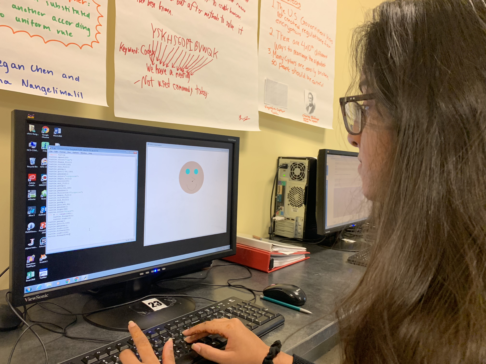

Within each pathway, students have the opportunity to participate in a plethora of hands-on learning experiences on a weekly basis, providing them with the chance to learn kinesthetically.

Pictured is a student in Exploring Computer Science experimenting with “turtle,” which a feature of Python that is used to create various shapes and drawings. As can be seen in the image, the code using turtle is on the left side of the computer, and the image that is being produced by the turtle functions, which is a smiley face, is on the right side of the computer.